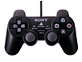
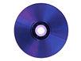
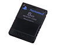

Caracteristicas:
Además...
La consola lleva:
Otras preguntas...
Dual Shock 2:
Internet
La consola estará preparada para internet pero
no llevará incorporado el módem igual que
Dreamcast, Sony tiene previsto lanzarlo por
separado, al igual que un periférico parecido
al disco duro para bajarse archivos de todo
tipo. Se dice que para que todo lo on-line esté
listo tendremos que esperar como mínimo hasta
el 2001.
Compatibilidad Playstation
Memory-Cards
Será igual en diseño al anterior pero tendrá
una notoria diferencia: Todos los botones del
mando excepto el Start y Select serán Analógicos,
es decir, será diferente si apretas fuerte que
flojo.

La Playstation 2 será compatible con la
Playstation normal, por lo que se podrá seguir
disfrutando de todos los títulos de la Playstation
con la Playstation 2. ¡Pero no seais brutos! Los
juegos de la Playstation 2 no servirán en la
Playstation normal.

Se podrán utilizar las memory-cards antiguas de
la Playstation normal en la Playstation 2
tranquilamente pero, de todas formas, Sony
pondrá a la venta una nueva memory-card con
capacidad de 8 megas y una velocidad 250 veces
mayor a la antigua.
